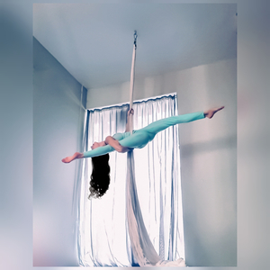
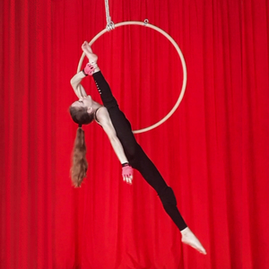
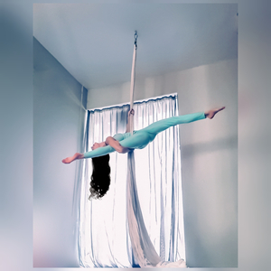
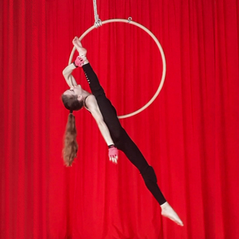
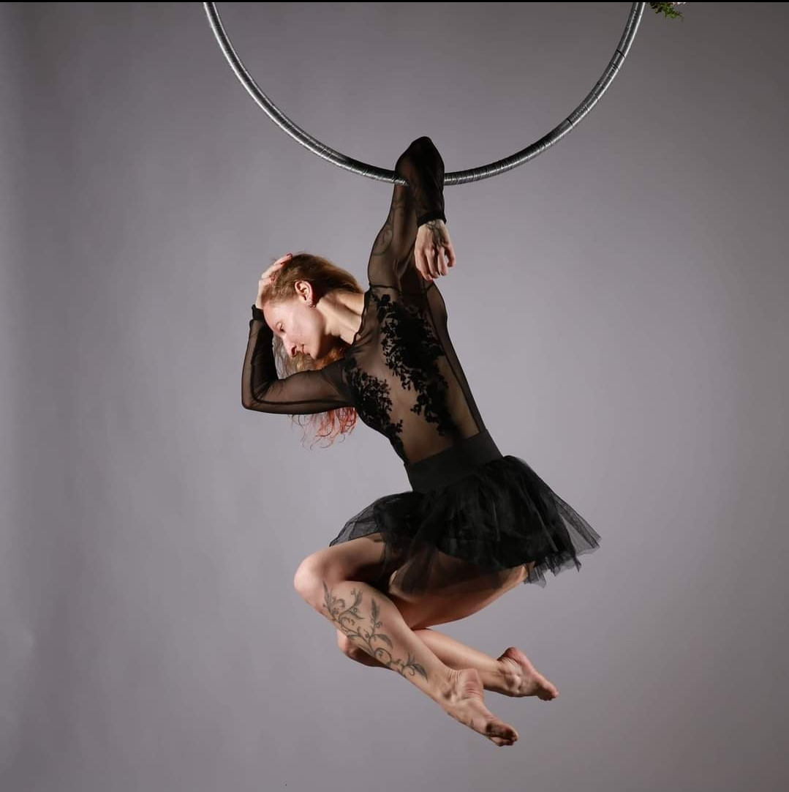
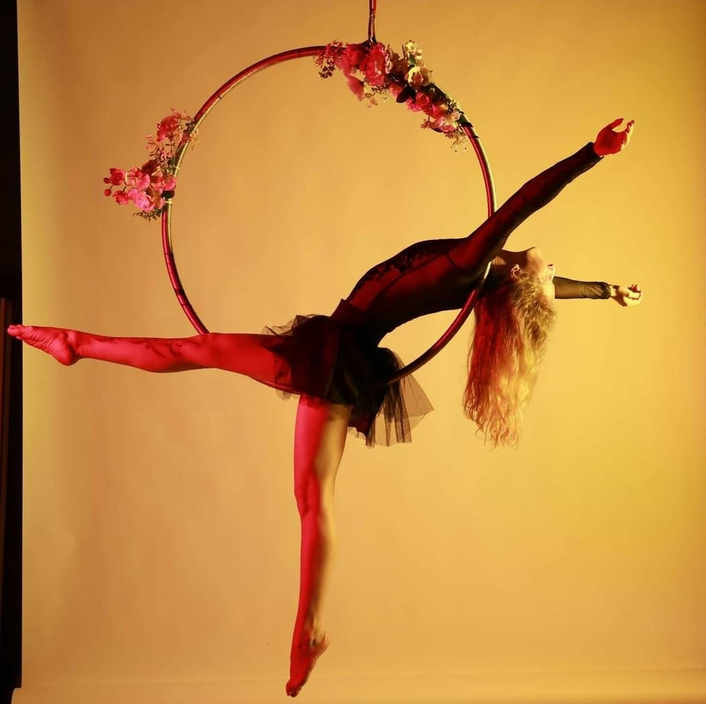
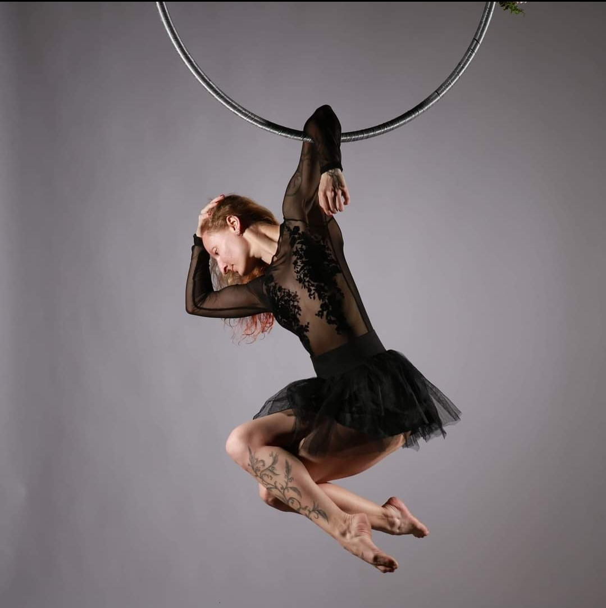
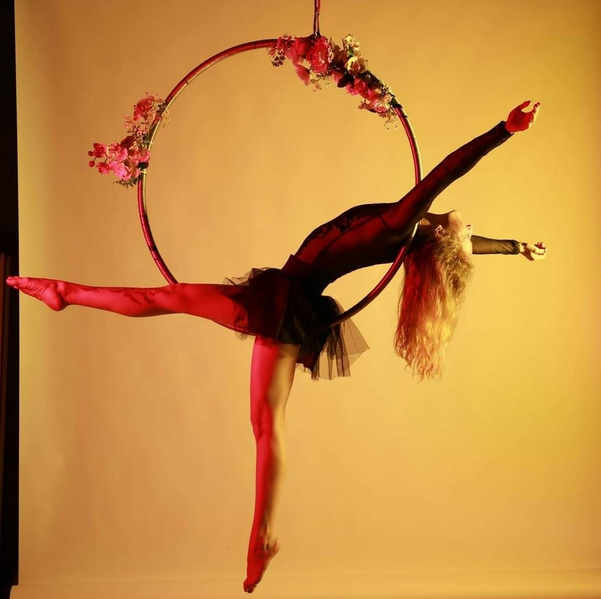

Инструктори

 



Ели
Това е Ели. Тя започва спортния си живот още в ранна детска възраст и се занимава с класически и модерен балет в продължение на 7 години. След това открива завладяващия свят на латино танците и прекарва следващите 8 години в усъвършенстване на салса, ча-ча-ча, бачата. Преди 5 години за първи път стъпва в зала по въздушни спортове и и до ден днешен ни изумява със своята сила, гъвкавост и грация. През 2022 година става сертифициран инструктор по Aerial silks/Aerial hoop. Нейната цел е да предаде знанията си на своите ученици и да ги мотивира да сбъдват своите мечти.

 



Мая
Това е Мая. Тя започва спортния си живот в залата по гимнастика и в продължение на 10 години се занимава с това. След това открива йогата и се запалва по спокойствието и удовлетвореността, които ѝ носи. Преди 3 години за първи път стъпва в зала по въздушни спортове и и до ден днешен ни изумява със своята сила, въображение и грация. През 2021 година става сертифициран инструктор по Aerial silks/Aerial hoop и йога. Нейната цел е да предаде знанията си на своите ученици и да ги мотивира да бъдат балансирани, да опитват да се справят с всяка трудност.
Анна
Това е Анна. Тя започва спортния си живот в залата по гимнастика и в продължение на 10 години се занимава с това. След това открива йогата и се запалва по спокойствието и удовлетвореността, които ѝ носи. Преди 3 години за първи път стъпва в зала по въздушни спортове и и до ден днешен ни изумява със своята сила, въображение и грация. През 2021 година става сертифициран инструктор по Aerial silks/Aerial hoop и йога. Нейната цел е да предаде знанията си на своите ученици и да ги мотивира да бъдат балансирани, да опитват да се справят с всяка трудност.
Кари
Това е Кари. Тя започва спортния си живот още в ранна детска възраст и се занимава с класически и модерен балет в продължение на 7 години. След това открива завладяващия свят на латино танците и прекарва следващите 8 години в усъвършенстване на салса, ча-ча-ча, бачата. Преди 5 години за първи път стъпва в зала по въздушни спортове и и до ден днешен ни изумява със своята сила, гъвкавост и грация. През 2022 година става сертифициран инструктор по Aerial silks/Aerial hoop. Нейната цел е да предаде знанията си на своите ученици и да ги мотивира да сбъдват своите мечти.